Lecture from Laser Scanning and Point Cloud Processing.
Needless to say, we want to extract information from point clouds. Some segmentation algorithms include:
- Extraction of smooth surfaces
- Scan line segmentation
- Surface growing
- Surface merging
- Voxel space analysis
- Extraction of parametrized surfaces (planes, cylinders)
- Hough Transform
- RANSAC (used it in Visual Odometry)
- Connected Components
I saw how all techniques work in Point Cloud Segmentation Practical. The algorithms were based on Hough Transform.
Scan line segmentation
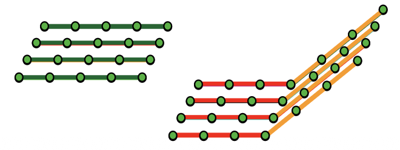
- It is independent of each scan line based on proximity, curve fit/height continuity and normal vector direction
- It is basically the process of merging the scan line segments across neighboring scan lines.
One technique to do multiple scan line segmentation and combine them into sections is to join segments with common nodes.
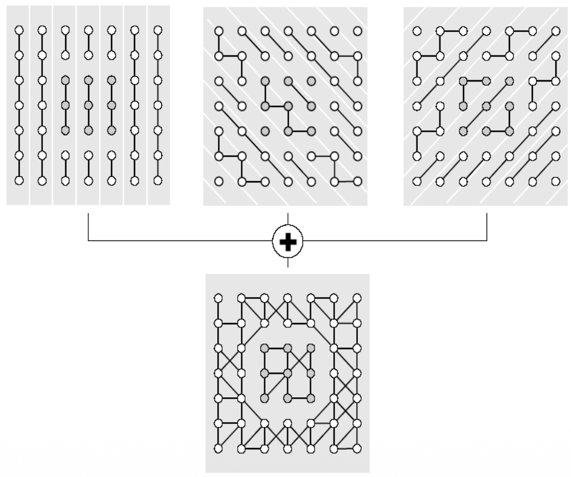
Some applications include
- Extraction of large smooth surface
- Decomposition into terrain and bridge
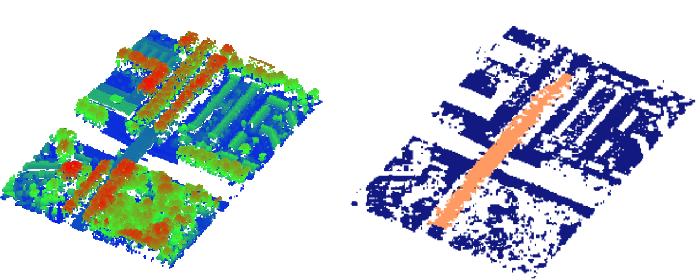
Surface Growing
It’s been adapted from Image Processing — the process of Region growing where the aim is to merge all pixels in a digital image which are adjacent. So basically, you start with an arbitrary pixel and you look around to see if there are any neighboring pixels which have the same color as the one you started with. If that’s the case, you consider them to be part of the same segment. Usually done in the grayscale domain.
In Surface growing we apply the same methodology, but with 2 differences:
- The data is not organized in a grid as in a digital image, as we work with point clouds.
- We don’t compare gray values, but we check if the points are approximately coplanar.
For example, in the left image below, I start with those points and accept them to be part of the initial plane. Next step, I then look again to the neighbors of the newly selected points (right image), while ignoring the points I already checked priorly. After I’m done with expanding that region, I then select another arbitrary point and apply the same steps.
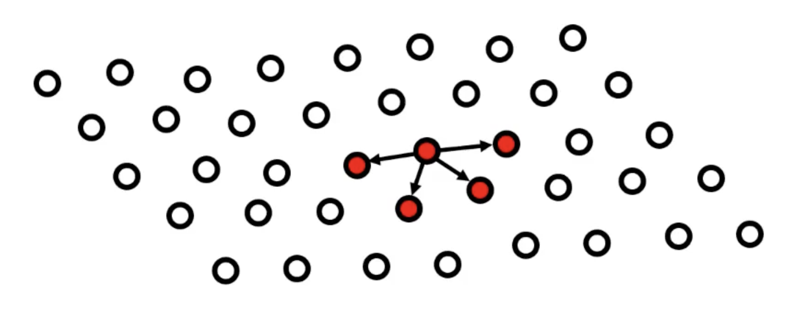
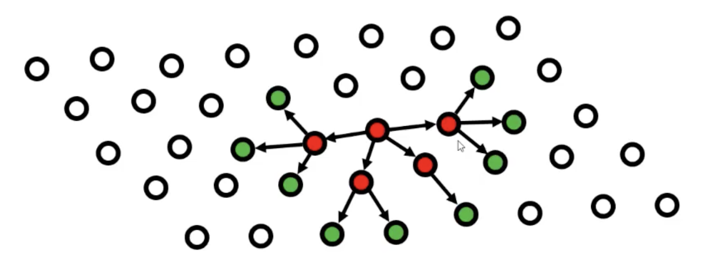
- Determination of seeds i.e. locally smooth patches based on
- Local surface fitting
- Local normal vector field
- You can look at the points as independent and compare their normal vector or you can also compare the plane normal vector with the points normal vectors.
- The growing of surfaces is based on
- Proximity (TIN, kNN)
- Surface fit/height continuity (in scan line it was curve fit/height cont.)
- Again normal vector direction
Surface Merging
Surface merging is a bottom-up approach that starts with small surface elements and combines them into larger segments.
The process involves 2 steps:
Step 1: Initial Triangulation
- Split the point cloud into triangles using Delaunay triangulation
- Each triangle is a tiny surface segment
Step 2: Iterative Merging - the algorithm repeatedly merges adjacent surfaces based on
- Adjacency - surfaces must share an edge or vertices
- Surface-to-surface distance - how well the surfaces fit together geometrically
There's an important problem: multi-layered surfaces. When you have overlapping or multiple layers (like a roof overhang), the method can struggle because it tries to merge surfaces that shouldn't be combined.
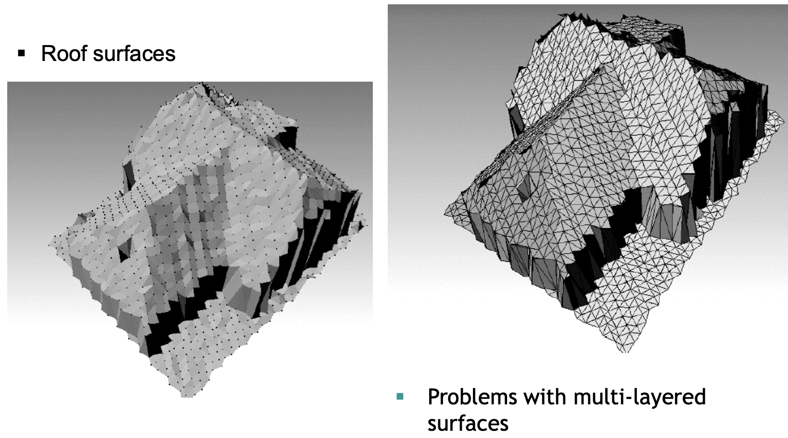
Surface merging works well for:
- Building roofs (as shown in the example)
- Relatively smooth, continuous surfaces
- When you want to build segments gradually from local to global
Voxel Space Analysis
This method converts the 3D point cloud into a regular 3D grid (like 3D pixels - called voxels), then applies image processing techniques.
Step 1: Rasterization
- Divide 3D space into uniform cubic cells (voxels)
- Mark voxels as “occupied” if they contain points, “empty” otherwise
Once I have the grid, I can then apply techniques from image processing
Step 2: Apply 3D Image Processing
Connected Component Analysis
- Find groups of adjacent occupied voxels
- Each connected group becomes a segment
Mathematical Morphology
- Erosion, Dilation, Opening Closing, I covered them in IPCV.
Skeletonization
- Reduce 3D objects to their “skeleton” (centerline)
- Useful for tree branches, pipes, roads
It’s best used for separating distinct objects (cars, trees, buildings), processing vegetation. It is memory intensive since I need to store the entire 3D grid.
Example of voxel space analysis for tree segmentation:
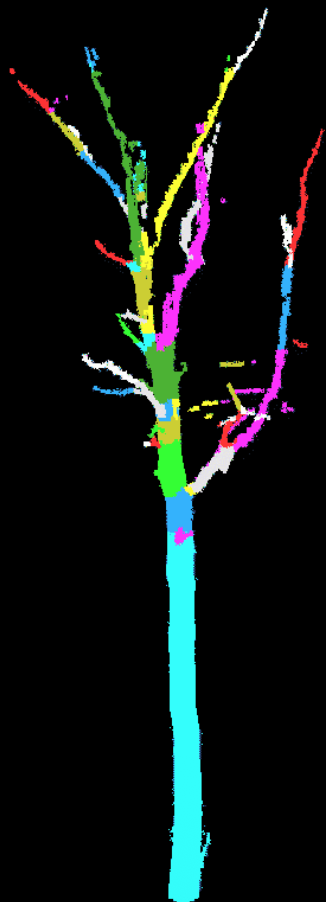
Extraction of parametrized surfaces
Hough Transform
Another example of a technique originating from image processing, where it is mainly used to extract straight lines from binary images.
In 2D, we can also use it for detecting straight lines, by using the equation
where is the distance of the line to the origin, and is the angle of the line to the Y axis.
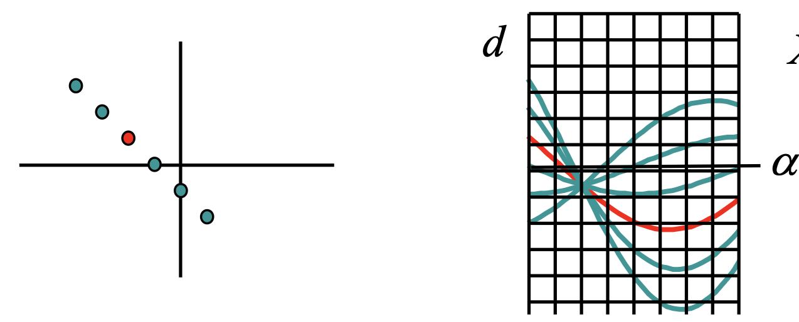
- If we select the random point on the left with its X and Y coordinates, d becomes a function of α. It's plotted as the multiple lines on the right side of the image.
- Each of those lines go through the each point on the left, so not only the first red one.
- What is interesting: all those lines intersect in one point. The parameters d and α that correspond to that point give the line equation that goes through all the points on the left. This is called the Hough Space
It’s interesting, in the example above, we discretize by overlaying that grid and we count the square in which we see the most amount of lines. That’s how we know where the point is and how to calculate for and .
Pay attention to the cell size. If you choose it too wide, you can't find the parameters very accurately. However, if you choose it very small, then the maximum amount of lines passing through that cell may not be very obvious, due to noise.
This can now be generalized to 3D surfaces such as planes, cylinders or circles.
Detection of planes
Plane in object space - point in Hough space
- We describe a plane by two slopes and a distance to the origin(distance to the Z-axis). Here we know and want to extract .
Point in object space - plane in Hough space
- just like in the 2D case, we can get use the coordinates of a point and determine the parameters
- this case corresponds to not using normal vectors. We simply compute a plane in the Hough Space for every point and we look for the intersection point of all those planes.
- If we do make use of the normal vectors, those points already define a plane in object space. And if I have the parameters of the plane, then that plane corresponds to a point in the Hough Space. So instead of calculating the whole plane in the Hough Space, I would only indicate a point in the Hough Space. I still need to localize the cell where most points are plotted.
Some example of planes detected by Hough Transform:
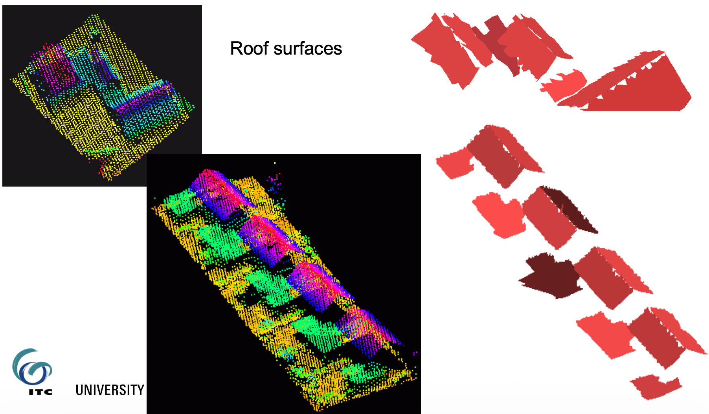
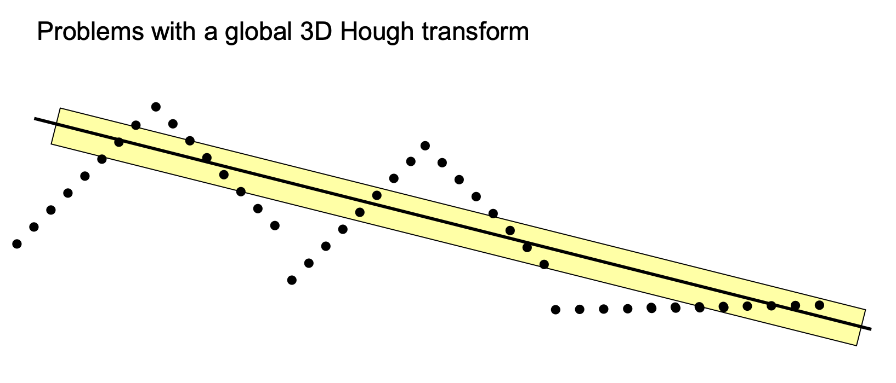
There are some drawbacks, however. For example, if we apply it to larger datasets.
For example, in the right picture above, the Hough transform could suggest drawing a middle line like that. But why does it happen? Because it’s not mainly looking at the points themselves that fit on the line, but at all the points that are within the buffer around that line.
- So, if I count the number of points that are within the yellow line, it is greater than any ascending or descending sides of each roof. That’s how I end up with this result.
So it’s not guaranteed that we get good segmentation by using the Hough Space, we always need to check our initial hypothesis.
Hough Transform to detect cylinders
In 3D, cylinders are described by 5 parameters. It would lead to 5 dimensions in the Hough Space, which is not ideal since we care about memory constraints and it also makes the detection of the maxima very difficult.
So I need to divide and conquer it in two steps
- Detection of orientation (2 parameters)
- Detection of position and radius (3 parameters)
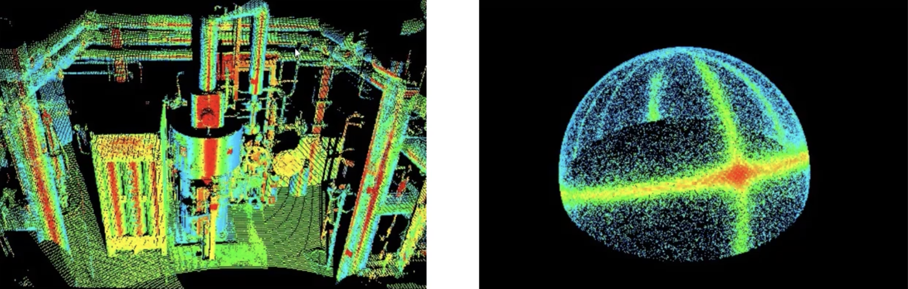
Step 1: Detection of the orientation of cylinders
On the left side of the image above, I can see 3 dominant directions: vertical, horizontal and inclined.
So to approach this, George suggests to plot all the normal vectors on a Gaussian sphere (right image). So ignore the positions of where they are computed, all starting from the middle point of that sphere. There we have the frequencies with which normal vectors are pointing to a certain direction. That’s when we take all the big circles going around that sphere and I can already see 3 of them. in the right picture. The last one might not be so obvious (it’s the one that starts from the right side, it finishes on the left side). I use the normal vectors to divide in the common points (where it’s not so obvious if it’s vertical or horizontal).
Step 2: Detection of the cylinder position and the radius
I take one of the cylinder directions found previously and now project all the points on the plane perpendicular to the cylinder axis.
- So, for the vertical direction, project all the points on a horizontal plane.
Interestingly enough, this reduces the problem from 3D to 2D because now we only need to find the coordinates of the circle in 2D — the center coordinates and the radius .
Again, I can choose to work with or without normal vectors. In the images below, they applied two methods.
- First they applied the surface growing method to connect all the components that might be part of the same smooth surface (bottom left)
- And second they applied the Hough Transform on the detected segments to extract the parameters of the cylinders (bottom right)
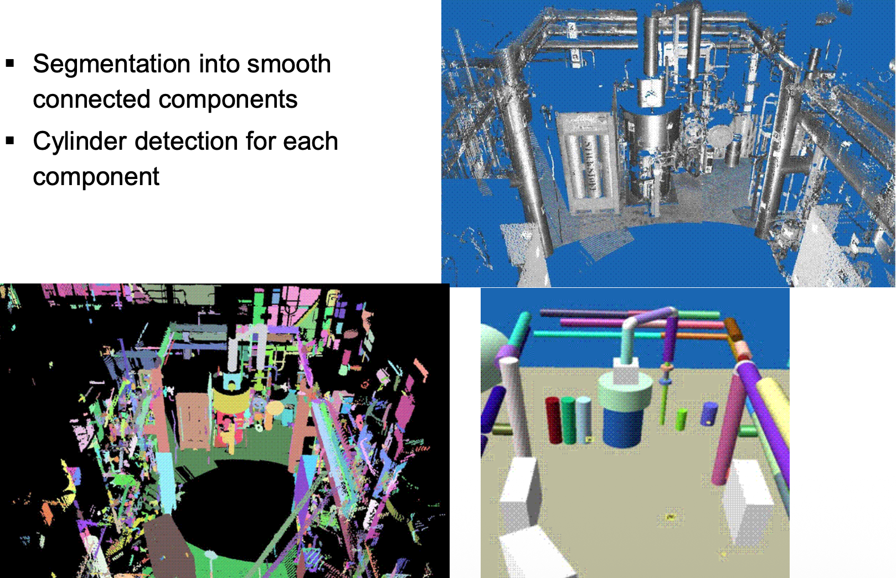
RANSAC
The key insight: instead of using ALL points to fit a shape, randomly sample small subsets and find which subset produces the best model.
Step 1: Random Sampling
- Randomly select 3 points (minimum needed to define a plane)
- Calculate the plane equation through these 3 points
Step 2: Count Inliers
- For every other point in the cloud, measure distance to this plane
- If distance < threshold it’s an inlier (agrees with the model)
- Count how many inliers this plane has
Step 3: Evaluate
- If inlier count > minimum threshold plane found!
- If not go back to Step 1
Step 4: Repeat